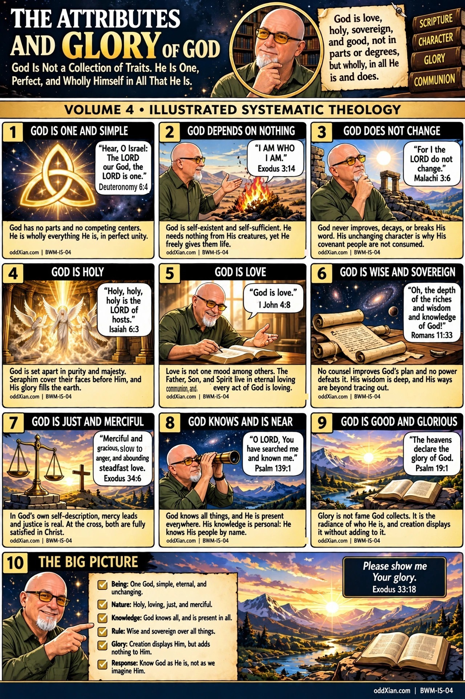

BWM-IS-04 · The Attributes and Glory of God

Companion narrative
Purpose
The graphic teaches that God is not a collection of traits assembled into a personality. He is one, simple, and perfect, and each attribute names the whole God under one aspect of His character. The plate walks from unity and self-existence through holiness, love, wisdom, justice with mercy, knowledge with nearness, to goodness and glory, and ends where Moses ends: asking to see the glory (Exodus 33:18).
Canonical anchors
- Biblical WorldModel ST-1 (God and Triune Purpose); the Eternal Trinitarian Covenant statement.
- BWM-IS-01 The Triune Foundation (the unity and simplicity panels presuppose the triune frame established there).
- BWM-IS-02 The Eternal Decree and Covenant (sovereignty and wisdom here are the decree volume's ground).
- BWM-IS-03 The Bible (every attribute claim on the plate is text-anchored, per the program's sourcing policy).
Argument in brief
Simplicity comes first (Deuteronomy 6:4): God has no parts, so no attribute competes with another. Aseity (Exodus 3:14) and immutability (Malachi 3:6) follow: the God who depends on nothing and does not change can be trusted absolutely. Holiness (Isaiah 6:3) names His set-apart majesty; love (1 John 4:8) names His eternal nature, grounded in the triune communion and not one mood among others. Wisdom and sovereignty (Romans 11:33) mean His plan needs no outside counsel. Justice and mercy meet in God's own self-description (Exodus 34:6), where mercy leads the list and both are satisfied at the cross. Knowledge and nearness (Psalm 139:1) are personal, not abstract omniscience. Glory (Psalm 19:1) is the radiance of all of it, displayed by creation without being increased by it.
Claim register
| ID | Claim | Basis | Type | Status |
| 04-1 | God is one and simple, without parts or competing centers | Deut 6:4, read with the confession of divine simplicity | Direct Teaching with confessional synthesis | Text anchored |
| 04-2 | God is self-existent and self-sufficient | Ex 3:14 | Direct Teaching | Text anchored |
| 04-3 | God does not change; His covenant people are not consumed because He does not | Mal 3:6 | Direct Teaching | Text anchored |
| 04-4 | God is holy, set apart, His glory filling the earth | Isa 6:3 | Direct Teaching | Text anchored |
| 04-5 | Love is God's nature, grounded in eternal triune communion | 1 John 4:8, read with BWM-IS-01 | Direct Teaching with systematic synthesis | Text anchored, synthesis disclosed |
| 04-6 | God's wisdom and knowledge are deep and His ways beyond tracing out | Rom 11:33 | Direct Teaching | Text anchored |
| 04-7 | In God's self-description mercy leads and justice is real; at the cross both are fully satisfied in Christ | Ex 34:6; the cross sentence follows by consequence across the canon | Direct Teaching plus Good and Necessary Consequence | The cross sentence is classified GNC on the plate script and must not be cited as the Exodus text |
| 04-8 | God knows all things and is present everywhere; His knowledge of His people is personal | Ps 139:1 with the whole psalm | Direct Teaching | Text anchored |
| 04-9 | Glory is the radiance of who God is; creation displays it without adding to it | Ps 19:1 | Direct Teaching | Text anchored |
Panel-to-source map
| Panel | Claim IDs | Primary source |
| 1 | 04-1 | Deut 6:4 |
| 2 | 04-2 | Ex 3:14 |
| 3 | 04-3 | Mal 3:6 |
| 4 | 04-4 | Isa 6:3 |
| 5 | 04-5 | 1 John 4:8 |
| 6 | 04-6 | Rom 11:33 |
| 7 | 04-7 | Ex 34:6 |
| 8 | 04-8 | Ps 139:1 |
| 9 | 04-9 | Ps 19:1 |
| 10 | Summary | Ex 33:18 |
Voiceover script
God is not a collection of traits. He is one, and He is simple: no parts, no competing centers, wholly everything He is. He depends on nothing; I AM WHO I AM is His name. He does not change, and that is why His covenant people are not consumed. He is holy, holy, holy, set apart in majesty. And He is love, not as one mood among others, but as the eternal communion of Father, Son, and Spirit overflowing in every act. His wisdom is deep, His ways beyond tracing out; no counsel improves His plan and no power defeats it. When He names Himself, mercy leads: merciful and gracious, slow to anger, abounding in steadfast love, and just, fully satisfied in Christ at the cross. He knows all things and is near in all things; He knows His people by name. His glory is not fame He collects. It is the radiance of who He is, and the heavens declare it without adding to it. So the only fitting response is Moses' prayer: please show me Your glory.